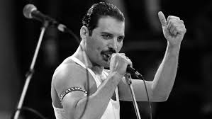

Freddie Mercury
Cantante y compositor del grupo Queen

"El cantante Freddie Mercury realizando uno de sus tantos recitales,
en la imagen se lo ve realizando lo que tanto amaba hacer. Cantar! "
Información adicional sobre Freddie Mercury
Aquí hay una linea de tiempo de la vida de Freddie Mercury:
- 1946- Nacimiento de Freddie
- 1951- Comienza el colegio
- 1954- Fue enviado con su abuela y su tia a estudiar al St. Peter´s School
- 1964- Se mudo con su familia a Inglaterra a causa de la revolución Zanzibar
- 1966- Obtuvo las más altas calificaciones en el examen de arte